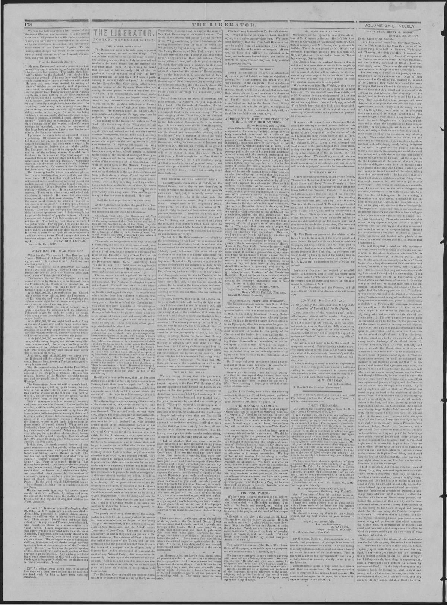

ADDRESS TO THE COLORED PEOPLE OF
https://www.loc.gov/resource/sn84031524/1847-11-05/ed-1/?sp=2

See the original pageVer la página original
THE U. S. OF NORTH AMERICA.
SAINT DOMINGO, July 10, 1847.
Dear Friends—We being native Americans who emigrated to this country in 1824, being now in body assembled, have resolved to offer to our brethren of the United States the law of emigration passed by our House of Congress, on the 5th inst. It invites all strangers here to participate in our glorious liberty, without distinction of color; and all who will come by this invitation, will have their passage paid at the rate of $14 per head; and those who will come with the avowed intention of becoming farmers will have, in addition to the payment of their passage, fifty acres of land, as a donation to them forever, together with the implements of husbandry, and a regular maintenance until they are able to maintain themselves; and they will be entirely exempt from military service, as also their offspring, in order that they may attend to the agricultural pursuits. We presume that this law can fully be depended on by all who may feel disposed to embrace its offers, as it is founded on necessity. As we have a very healthy climate, and perhaps one of the best soils in the world, with a generous population, all we stand in need of is American society—or in other words, tillers of the ground; in fact, by the aid of foreigners, this might be made a paradisiacal garden. We have the full right of the liberty of conscience. We have a Methodist church in the city of Port Plat; and in Samana, and one in this city, where we worship God according to the dictates of our consciences, without the least molestation. Our friends may depend on this information as being strictly true; and up to the present time we have a majority of colored population of more than two-thirds. We expect that many white people will accept this offer, as they seem generally more disposed for adventure than the colored. However, we hope that our friends will not let this fine opportunity pass, without embracing it.
There is a vessel engaged to bring out emigrants. She is consigned to the house of Messrs Amar & Co., New York. Persons interested will do well to call on the above gentlemen. Furthermore, should it become a general desire, any merchant who would choose to fit out a vessel, for the purpose of bringing out emigrants, will be sure to receive $14 a head, including all expenses, for as many as they will land here. If any merchant should like to have a guaranty, they could, by writing to our President on the subject. His name is ‘Pedro Santana,’ President of the Dominican Republic. It will not be as inconvenient to new comers hereafter as it was with us. We can give them all the necessary information how to conduct themselves in this country.
We remain, dear brethren, yours.
Signed in behalf of the meeting,
REV. JAMES FALLS, Chairman.
ELIJAH B. GROSS, Secretary.
How to cite this articleCómo citar este artículo
The Liberator. (1847). Boston, Mass., November 5, 18475 de noviembre de 1847. DR in the American PressRD en la Prensa Norteamericana. Library of Congress, Chronicling America: https://www.loc.gov/resource/sn84031524/1847-11-05/ed-1/?sp=2
ReferencesReferencias
Library of Congress, Chronicling America: The Liberator, November 5, 18475 de noviembre de 1847.
Send an observationEnviar una observación
Does this article connect with your family, your town, or something you know? Did we get something wrong? Write to us. Observations go to the editor's inbox and are read by a person.¿Este artículo conecta con su familia, su pueblo o algo que usted conoce? ¿Nos equivocamos en algo? Escríbanos. Las observaciones llegan al buzón del editor y las lee una persona.
Send observationEnviar observación